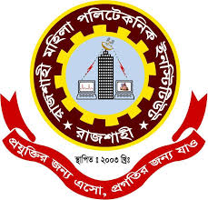

Rajshahi Mohila polytecnic Institute |
|
| RMPI !! Organization related !! Regarding admission !! Computer Science and Technology !! Co-curriculum !! Click to share the content !! Institutional e-services | |
Welcome to RMPIEducation is one of the most important aspects of our lives. It helps us to be better citizens and to be better people. It is the key to success in life. Education gives us the knowledge and skills we need to be successful in our careers and in our lives. It helps us to better understand the world around us and to make better decisions. Education is the foundation of our society and it is the key to a better future for all of us. A good education system helps in the development of a country. It helps in the advancement of technology and science. It helps in the development of the economy of the country. A good education system opens up the doors of employment and business opportunities for the people of the country. A good education system makes the people of the country more responsible and knowledgeable.For developing a nation, it is important to provide education to each one of living in the society. The key to a developed nation is connected with the education system of a society. Literacy is part of education. In developing countries, education is a tool for the social justice and social well-being of people. Education is a parameter for checking up the nation’s social situation. The literacy rate reflects the social development and political well-being of the society. |
|
| Desing By Tasnim Parvin(722233) | |